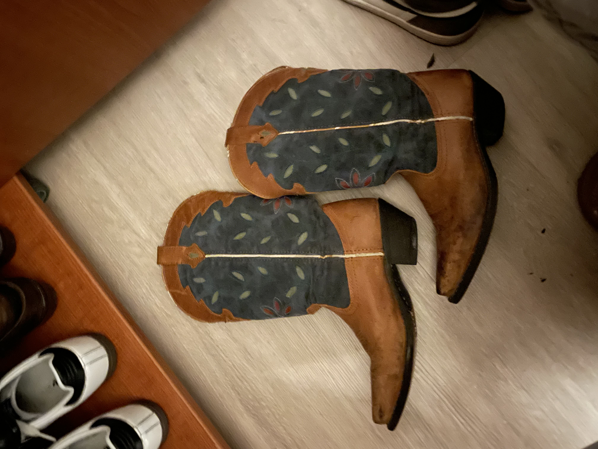

My mom and I love to thrift together and being form Portland, OR there is endless spots to go to to shop. When ever I come home for the holiday or long breaks my mom and I always make sure we pencil in one day to go thrifting. during the Thanksgiving break of 2022, I told my mom about my new cow girl boot oppression and how I wanted to try and thrift a pair. Later that day after out thrifting adventure, she went to one last store by herself and send me 4-5 pictures of cow girl boots, asking if I wanted any. I told her the brown boots with the blue suede details were my dream shoes and she got them for me. They are now my favorite pair of shoes. They are so unique and special and I have never seen any boots like them before!
 Back